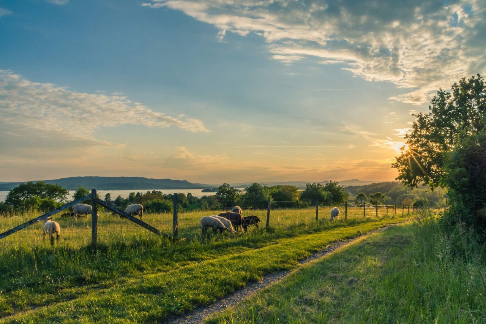

Finding adventure in the serenity of the countryside Visiting the countryside was an adventure that brought me closer to nature and offered a break from my usual routine. I found myself hiking through rolling hills, discovering hidden trails, and breathing in the fresh, unspoiled air that felt worlds away from the city.
Immersing myself in the slower pace of rural life, I learned to appreciate the beauty of simplicity—whether it was watching the sunrise over vast fields, trying my hand at traditional farming techniques, or sharing stories with locals over home-cooked meals.
The quiet serenity of the countryside gave me space to reflect, recharge, and see the world from a fresh perspective, making it an experience I'll always cherish.
